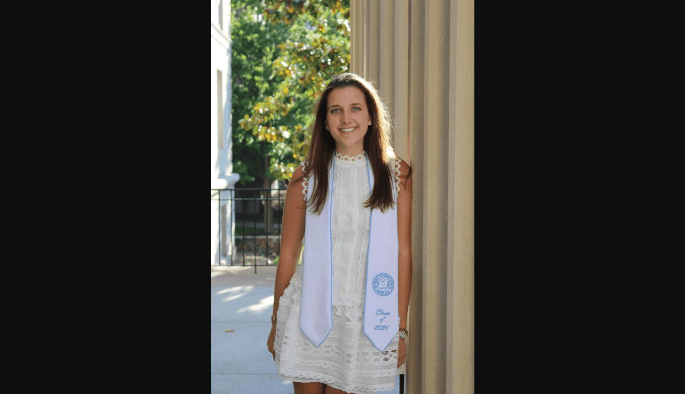

Data Analyst | Wake Forest MSBA candidate and Economics graduate with two years of research and consulting experience turning quantitative and policy analysis into decision-ready recommendations for biopharmaceutical and advocacy clients. Building applied Python, SQL, and machine learning skills through a STEM-designated analytics curriculum centered on corporate-partner projects.
Master of Science in Business Analytics (MSBA)
Bachelor of Arts in Economics — Minor in Entrepreneurship
Healthcare Policy & Research Intern · May 2025 - Aug 2025
Research Intern · Jun 2024 - Aug 2024
Operations & Client Services Intern · Jan 2024 - Dec 2024
Alumnae Relations Chair & Budgeting Committee · Dec 2022 - Dec 2024
Co-President · May 2021 - May 2022
Python · Microsoft Excel (Pivot Tables, formulas, charting)
SQL & relational databases · Machine learning · Data visualization & dashboarding
Microsoft Office Suite (Word, PowerPoint, Outlook) · Muckrack · Canva · Google Forms
Spanish (working proficiency, oral and written)
Winston-Salem, NC
Chapel Hill, NC
fishl26@wfu.edu